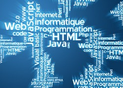

Présentation du BTS SIO

Le BTS Services informatiques aux organisations (BTS SIO) vous forme aux métiers d’administrateur réseau ou de développeur, et comporte deux options :
Option SISR : solutions d’infrastructure, systèmes et réseaux.
Option SLAM : solutions logicielles et applications métiers.
Ce diplôme bac+2 de niveau 5 au RNCP délivre 120 crédits ECTS et permet la poursuite d’études si vous le souhaitez.
=> Support et mise à disposition de services informatiques : vous serez capable de répondre aux attentes des utilisateurs en assurant la disponibilité des services informatiques existants.
Vous serez également en mesure de prendre en compte les besoins informatiques dans l'entreprise et d'accompagner la transformation numérique des services informatiques.
=> Cybersécurité des services informatiques : vous serez formé à la cybersécurité et à son intégration dans l'entreprise, en tenant compte des dimensions techniques, organisationnelles et juridiques.
| SLAM |  |
| SISR |